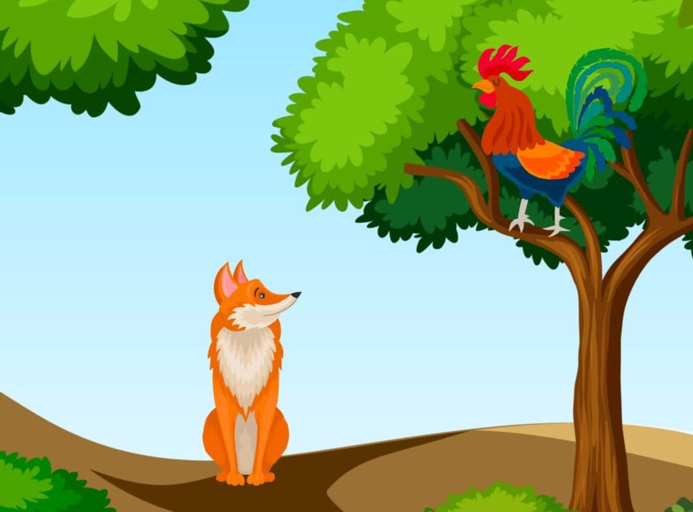

The Cock and the Fox

The light from the setting sun shimmered through leaves as it touched down on this beautiful world. The wise old Cock
was feeling tired after his day of flying around, so he sought out the safety and solitude in a tree. But just as he was
about to sleep, he saw a flash of red and a glimpse of a long pointed nose. He knew it was Master Fox.
“Have you heard of the wonderful news, my friend ?” cried the cunning Fox very joyful and excitedly.
The cock was surprised by the friendly tone of the Fox. “What news are you talking about?” asked the Cock, trying to
appear calm. But he had a fluttery feeling inside as he was very much afraid of the Fox.
“Our families, yours, mine and all other animals have agreed to forget all about our differences and be friends. We will
now leave in peace and harmony from now. Isn’t that great? This is a time for celebration. I simply cannot wait to
embrace you! Come down, my dear friend, and let us celebrate the joyful event.”
“How amazing!” said the Cock. “This is certainly great news. “
“Oh, I see; that is why the dogs are running towards us. They must have heard the good news and ma running with joy,
“said the cock stretching up on tiptoes while looking afar off.
But Fox’s demeanor changed as soon as he heard about the dogs, and off he started on a run.
“Wait,” cried the Cock. “Why are you running away? The Dogs are our friends now!. They will not harm you. Don’t you want
to celebrate with them too”
“Yes indeed,” answered the Fox. “But they might not have heard the good news. Besides, I almost forgot about a very
important errand that needs my attention.” The fox swiftly ran away from there, leaving the cock alone.
The Cock smiled as he buried his head in his feathers as he composed to sleep, for he had outwitted a very crafty enemy.
Moral: The trickster is easily tricked.